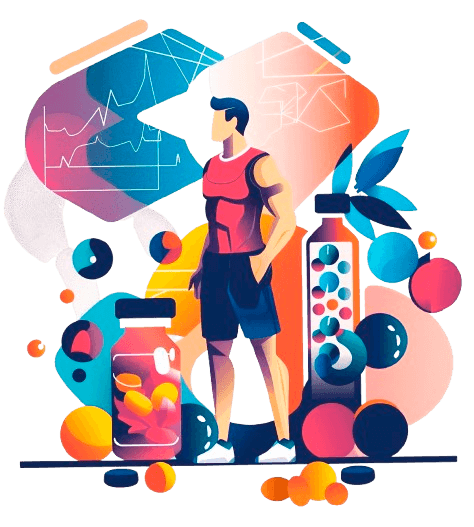
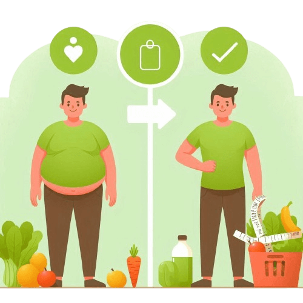

Nutrição Clínica
Esta área se concentra no tratamento e prevenção de doenças através da alimentação adequada. Nutricionistas clínicos trabalham em hospitais, clínicas e consultórios particulares, ajudando pacientes com condições como diabetes, doenças cardíacas, distúrbios alimentares, entre outros.
Nutrição Pediátrica
Concentra-se nas necessidades nutricionais específicas das crianças, desde o nascimento até a adolescência. Os nutricionistas pediátricos trabalham com pais e cuidadores para garantir que as crianças recebam os nutrientes necessários para crescer e se desenvolver adequadamente.
Nutrição Comunitária
Envolve trabalhar em nível comunitário para promover hábitos alimentares saudáveis e prevenir doenças relacionadas à alimentação. Isso pode incluir programas de educação nutricional em escolas, locais de trabalho ou em comunidades carentes.

Nutrição Esportiva
Este tipo de nutrição está relacionado à otimização da performance física e recuperação de atletas. Envolve o planejamento de dietas específicas para melhorar o desempenho esportivo, ganho de massa muscular, perda de gordura e recuperação após o exercício.
Nutrição da Obesidade
Este campo da nutrição se concentra na prevenção e no tratamento da obesidade através da dieta e do estilo de vida saudável. Os nutricionistas especializados em obesidade trabalham com pacientes para desenvolver planos alimentares que promovam a perda de peso de forma sustentável e saudável.

Pronto para Transformar Sua Vida?
Escolha o serviço ideal para você e comece sua jornada de transformação hoje mesmo!